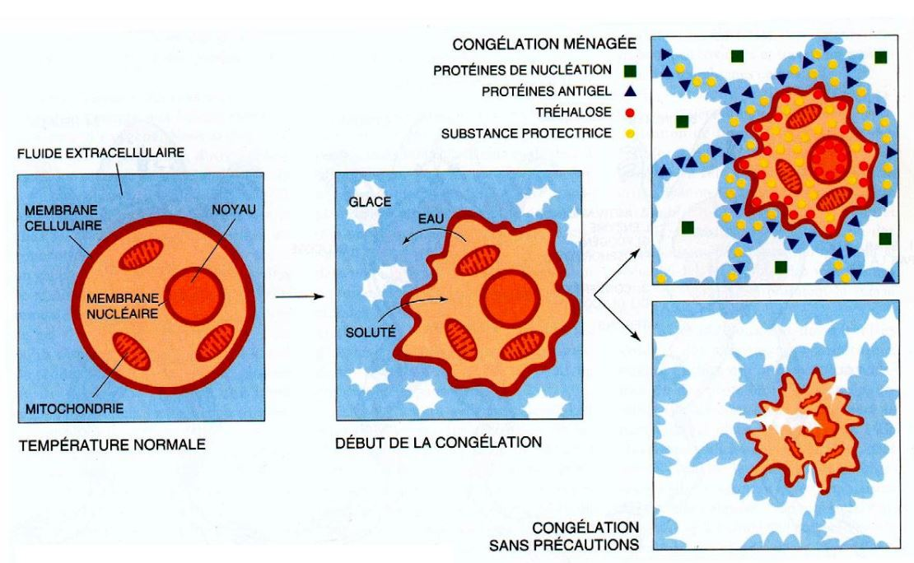
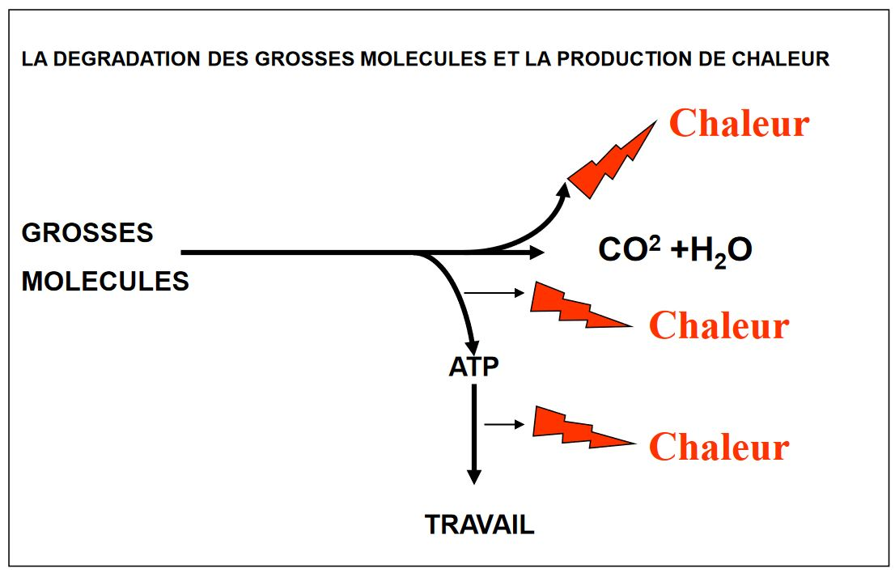
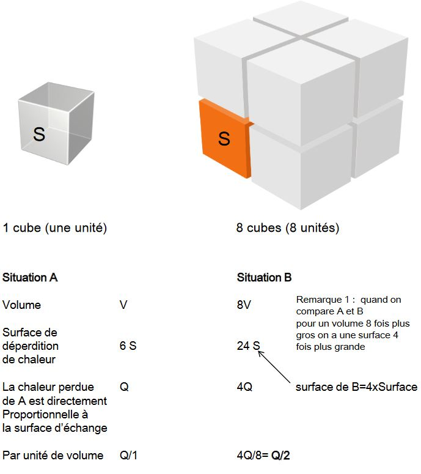
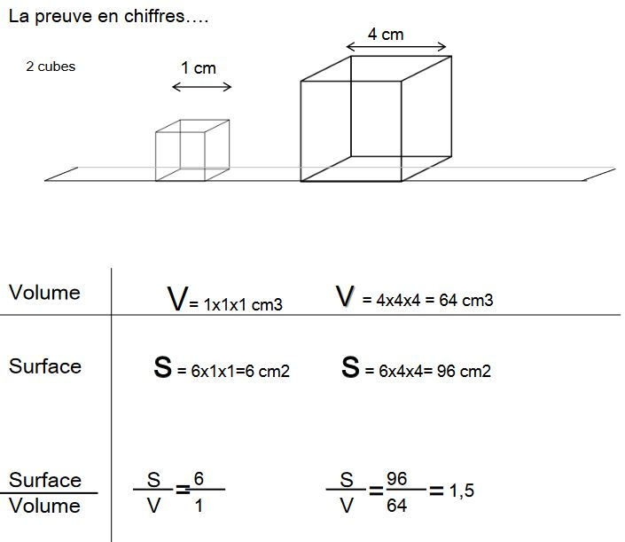
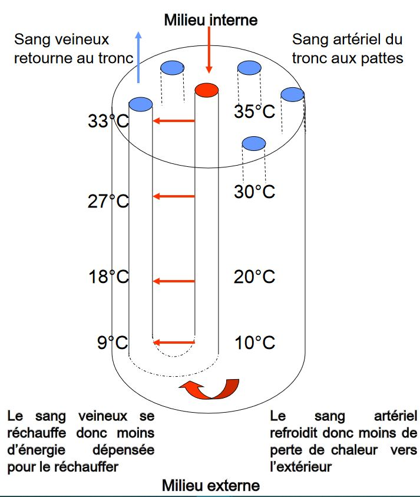
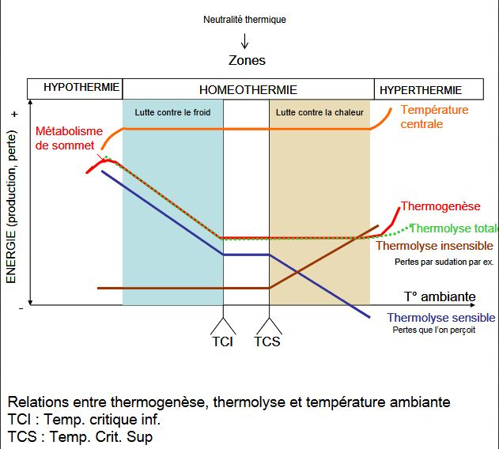
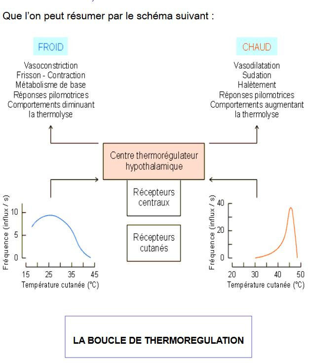

La Thermorégulation
La Thermorégulation
Avant propos
Homeostasie = permet de maintenir, dans un état dynamique, un organisme où son milieu sera stable
Le milieu extérieur varie tout le temps (température, pression...). Cependant à l'intérieur de l'organisme, le milieu extracellulaire doit avoir des changements minimes grâce à des mécanismes de rétroaction. Pour cela, il faut qu'il y est des recepteurs qui captent les changements extérieurs qui vont être analyses et des mécanismes vont permettre de répondre efficacement à ces information rétro-inhibition.
Préférendum = habitats dans une espèce va se retrouver préférenciellement
I) Impact biologique de la température
A) Au niveau moléculaire
Plus la température augmente, plus la vitesse de réaction enzymatique augmente. On aura un maximal de vitesse (optimum). Mais au delà de l'optimum, la température, qui continuera à augmenter, dégradera l'enzyme.
La température va avoir un effet considérable sur une réaction enzymatique.
B) Au niveau d'un organisme tout entier
Plus la température augmente, plus le consommation en taux d'oxygène de l'animal augmente.
C) Les limites de la thermorégulation
Théoriquement il n'y a pas de vie possible en dessous de -2°C et au dessus de 55°C. Ceci est dû à:
-
le gel de l'eau continue dans les cellules
-
la thermoabilité des protéines
Il y a toujours des exceptions sauf pour certains cas particuliers dû aux formes déshydratés ou autre. Mais ils peuvent être capable aussi de résister au froid en dessous de -10°C. Ce sont des organismes qui subissent les variations de températures. Ils vont prendre une diminution de température.
-
présente dans leur liquide interne une substance anti-gel
-
protéines de nucléation
-
deshydratation progressive des cellules et du volume cellulaire
Certains organismes sont ectotherme luttant contre la congelation en systhétisant des substances "anti-gel". Ces substances sont des osmolytes (glycérol, sels..) ou des protéines qui diminuent le point de congélation, c'est le mécanisme de surfusion.
Chez certains Lépidoptères, on mesure un taux de glycérol croissant à l'approche de l'hiver, ils peuvent geler complètement et supporter des températures inférieurs à -50°C. Pas de mouvement, pas de respiration, pas de battements cardiaques. La chenille peut subir ces mécanisme de congélation décongélation plusieurs fois au cours de son cycle de vie (jusqu'à 7 ans de vie larvaire)
Chez les poissons des eaux polaires, on retrouve des AFGP (Anti-Freeze GlycoProteins)
Les protéines antigel interagissent avec les cristaux de glace et empêchent leur croissance.
D’autres organismes au contraire favorisent la congélation mais celle - ci est dirigée, maitrisée et lente . Ils synthétisent des protéines dites de nucléation.
La congélation est ménagée et l’organisme synthétise également des protéines antigel et autres substances protectrices pour protéger les compartiments non congelés.
L'organisme de l'animal va pouvoir protéger certains organes vitaux en choississant les organes qui vont être congeler grâce aux protéines de nucléation mais si l'animal est blessé, il peut mourir. Le processus total peut durer 24h.
L’état de surfusion permet de conserver liquide une solution ou de l'eau même si la température est inférieure à 0°C. Mais seul, c'est un état assez instable. La congélation ménagée permet d'atteindre cet état de surfusion et de protéger les organismes du froid intense de façon moins risquée.

II) Les animaux produisent de la chaleur et émergent cette chaleur avec leur environnement
A) Transferts de chaleur avec l'environnement
La chaleur se propage toujours du chaud vers le froid.
-
la conduction (contact entre l'élement chaud et l'élement froid)
-
le rayonnement ou la radiation
-
la convection (contact avec un fluide eau/vent)
-
l'évaporation
La température corporelle reflète l'équilibre entre les gains et les pertes de chaleur : la balance thermique
B) La production de chaleur liée au métabolisme énergétique
Les échanges doivent être tout le temps équilibrés avec une température centrale qui va représenter chaque groupe d'espèce (37°C pour l'Homme). En fonction des gains ou des pertes, notre organisme va tout le temps essayer de compenser (pertes de chaleur thermolyse et gains de chaleur thermogénèse).
La thermogénèse est une production de chaleur liée au métabolisme energétique.
Le rendement énergétique des réactions exothermique est d'environ 25%, le reste est dissipé sous forme de chaleur.

Le métabolisme de base est le métabolisme énergétique, au repos à jeun dans un environnement ni trop chaud ni trop froid. Les différents organes produisent tout de même de la chaleur. Cela correspond à une vitesse de métabolisme minimale.
Chez l'Homme, viscère 56%, cerveau 18%, peau 18%
Elle a permit de distinguer deux grands types d'animaux
-
les animaux endothermes : la source de chaleur pour l'organisme est principalement interne
-
les animaux ectothermes : la source de chaleur est principalement externe
Les capacités de régulation thermique des animaux sont différentes
Les homéothermes, animaux dont la température corporelle est constante en toutes circonstances. La plupart des endothermes qui ont developpé un dispositif de régulation de la chaleur qui leur permet de maintenir dans les conditions normales leur température centrale dans des limites de variation qui n'excèdent pas 2°C sont homéothermes. On distingue les espèces endohoméothermes et les espèces exohoméothermes, la constance de la température centrale est due à un habitat à température constante.
Les espèces homéothermes peuvent exercer leurs activités usuelles dans un rang important de variation de la température externe: en terme de répartition, ils peuvent conquérir de nombreuses niches écologiques.
Les espèces poïkilothermes dont la température centrale varie avec celle de l'environnement ont une activité dépendante de la température externe. Ces espèces n'ont pas les moyens énéergétiques d'assurer la thermorégulation. Elles n'ont pas la capacité de production de chaleur nécessaire pour compenser les pertes dans des conditions extérieurs variables, la pluaprt des animaux ectothermes sont poïkilothermes.
Les hétérothermes, certains animaux endothermes ne sont pas strictement homéothermes, placés dans des conditions extrêmes vont adopter des stratégies comportementales qui vont leur permettre de maintenir la température. De même certains ectothermes ne sont pas strictement poïkilothermes.
Il existe également : les hétérothermes temporels
Certains animaux maintiennent une température corporelle seulement à certains moments de la journée ou de l'année.
Torpeur : état physiologique caractérisé par une baisse de l'activité physique et une diminution du métabolisme.
III) Les adaptations thermique des endothermes
A) Morphologiques
L'isolation
Un endotherme est un animal capable d'élever sa température interne lorsque la température externe diminue grâce à son métabolisme élevé et aussi grâce à l'isolation efficace de son corps qui diminue la conductivité de leur corps. L'air emprisonné dans les plumes ou les poils est un puissant isolant de même que la graisse sous cutanée.
-
Les plumes de duvet
- emprisonne l'air (mauvais conducteur thermique)
- elles sont légères
- elles sont vasculariser (protège les vaisseaux au niveau de la peau)
- peuvent éventuellement recouvrir les pattes et le bec
La piloerection chez les oiseaux est un mécanisme rapide qui permet de faire évoluer l'isolation afin d'emprisonner plus d'air sur un temps très court.
-
La fourrure, efficace contre le froid avec un sous poil très dense. Les animaux peuvent se retrouver dans un milieu très froid qui va varier. Elle va donc varier selon les saisons. Chez l'ours brun, la mue d'été permet une diminution de 50% du pouvoir isolant de la fourure de l'animal
-
La graisse
La piloerection des mammifères est un vestige ancestrale grâce à des muscles horipilateurs qui vont redresser le poil.
Cas particulier chez les enxothermes aquatiques.
Chez les oiseaux, leur couches isolantes vont mouiller, il entretiennent leur plumage avec un substance mais ce n'est pas suffisant donc il vont sécher.
Chez les mammifères exclusivement marins, la graisse va prendre le poids sur les poils
La morphologie d'une même espèce peut changer en fonction des conditions climatiques. Un animal vivant dans un climat chaud sera plus maigre et plus élancé qu'un animal vivant dans un environnement froid.
Le rapport Surface/Volume
Les animaux endothermes de climat froid ont en général des extrémités plus courtes. Règle de Allen.
Selon la règle dite de Bergmann, les petits animaux comme le renard seraient plus gros dans les régions froides. En effet, c'est le rapport Surface/Volume qui importe.
S/V doit être faible car, plus il est faible moins il n'y aura de perte d'énergie sous forme de chaleur
D'une manière générale, les aniamaux des régions polaires sont trapus et ceux des régions chaudes élancés.
Les animaux trapus des régions chaudes vivent dans l'eau ou ont des structures particulières facilitant les pertes de calories.


Plus la masse corporelle est forte, plus le rapport S/V est faible, donc moins l'animal perd de chaleur (car la chaleur perdue est directement proportionnelle à la surface)
B) Anatomiques et Physiologiques
Les adaptations circulatoires
La température corporelle des endothermes est constante mais elle n'est pas homogène au sein de l'organsime il existe des tranferts de chaleur entre les différents organes grâce au flux sanguin (les plus chauds internes vers les plus froids externes): du noyau central à la périphérie.
Zone interne stable thermiquement (noyau central) et zone externe (enveloppe = peau, extrémités) variable thermiquement
La régulation de la circulation sanguine au niveau cutané par vasoconstriction ou vasodilation constitue un échangeur thermique.
Pour le porc, il y a une réaction de chasse au niveau de l'oreille placé à une température de 5°C. Régulièrement, le sang irrigue l'oreille et en augmente la température ce qui évite l'anoxie et le risque de gelure.
Echangeur thermique à contre-courant = Autre type d'échangeur thermique lié à des arrangements anatomiques de veines autour d'une artère centrale au niveau des extrémités des membres. Ils évitent des pertes de chaleur trop importants (fréquent chez les Mammifères marins et Oiseaux)

Chez certaines espèces, les échangeurs thermiques peuvent permettre le refroidissement du milieu externe
Comme le chien où les échangeurs thermiques permettent de refroidir le cerveau lorsque la température ambiante est élevée.
Les échangeurs thermiques de certains hétérothermes
Contrairement à la majorité de poissons (ectothermes), certains sont qualifiés d'hétérothermes régionaux. Ils ne bénéficient pas des rayonnements solaires pour se réchauffer et ce sont des grands nageurs.
Produisent assez de chaleur pour élever la température de leurs muscles de parfois +10°C par rapport à la température entre l'enveloppe et le centre des muscles.
Certains échangeurs thermiques mettent en jeu des muscles profonds
Ce qui est valable pour les gains de chaleur peut l'être aussi pour les pertes
Adaptation au niveau moléculaire
Chez les oiseaux par exemple, une partie des pattes et des doigts est dépourvue de plumes.
Les cellules des tissus en contact avec le substrat froid sont adaptées. Les acides gras des membranes sont en majorité des adcides gras insaturés (avec au moins une liaison c=c entre les deux atomes de carbone). Ces acides gras insaturés ont la particularité de rester fluides à basse température.
Ainsi, la membrane cellulaire garde ses fonctions en particulier pour les échanges gazeux de part et d'autre et la cellule reste fonctionelle.
C) Comportementales
- Le choix de l'environnement
- La construction de microenvironnements
- Les migrations
- Comportements spécifiques
IV) La thermogénèse
Les contractions musculaires volontaires
Les valeurs de l'Homme au repos.
Facilement observé ce comportement est fatiguant donc de durée limitée
La thermogénèse avec frisson
Région dorso-médiane de l'hypothalamus postérieur normalement inhibé par l'aire préoptique.
Contractions de tès courtes durées qui n'entraîenent pas de mouvement et répétées de façon cyclique de muscles squelettiques agonistes et antagonistes.
La thermogénèse (sans frisson) liée à l'augmentation du métabolisme
Elle passe par la sécrétion d'hormones principalement l'Adrénaline et la Noradrénaline (glandes surrénales)
- effet vasoconstricteur
- effet métabolique, en effet, elles augmentent le métabolisme cellualire en augmentant la glycogénolyse (foie et muscles) et la lipolyse (graisses)
Ces hormones sont sécrétées en cas de stress ou d'exposition brutale au froid, hormones de coup de froid
A l'opposé, si l'exposition au froid se fait graduellement, au cours des saisons par ex, on observera une augmentation du taux d'hormones thyroïdiennes, qui favorisera une augmentation du métabolisme oxydatif des mitochondries d'organes cibles.
Hormones d'accllimatement au froid
Cas particulier de thermogénèse métabolique: celle du tissu adipeux brun
(voir schémas)
La thermogénèse musculaire particulière sans contraction
Certains poissons téléostéens présentent des organes thermogéniques comme l'Espadon.
Organes thermogéniques oculaires réchauffent les yeux et le cerveau (interviendrait dans la qualité de la vision et donc des capacités de prédation de l'Espadon)
V) La thermolyse
A) Contrôles physiologiques des pertes
La sudation
La densité des glandes sudoripares est importante chez l'Homme, la vache et le cheval. Elle est faibe chez les carnivores
La polypnée
Les échanges respiratoires nécéssitent que l'air inspiré soit humidifié, donc la respiration intervient dans la thermorégulation. La polypnée thermique se traduit par une brusque accélération du rythme respiratoire.
Chez le chien, la fréquence respiratoire peut ainsi passer de 30-40 inspirations par minutes à 300-400.
Les oiseaux, augmentent l'évaporation par la polypnée et le Gular flutter oscillations rapides du plancher fin du bec et de la partie supérieure du gosier.
B) Les contrôles comportementaux
- Le léchage
- Les bains
- La posture (exposition des surfaces au contact avec l'extérieur)
VI) La boucle de thermorégulation des endothermes

A) La reception
Sensibilité thermique liée aux recepteurs centraux (renseignent sur la température interne) et aux récepteurs périphériques (renseignent sur la température externe)
- Sensibilité thermique aux récepteurs périphériques de la peau
Terminaisons nerveuses libres, ce sont des fibres nerveuses avec ou sans myéline qui transmettent l'influx vers les centres nerveux intégrateurs.
Nocicepteurs qui se transmettent la sensation douloureuse du chaud quand la température est > 40°C ou au froid quand la température est < 10°C
Les recepteurs peuvent renseigner des variations de température mais aussi sont capables de répondre à une température précise par des fréquences précises = réponse tonique ou statique.
Dans le premier cas, c'est la température de départ, l'amplitude de la variation et la rapidité de la variation qui sont importantes = réponse phasique ou dynamique.
Suivant la température, le message sera codé de façon différente en potentiels d'action/min (Hz) mesurables sur les fibres sensitives des recepteurs cutanés.
- Sensibilité thermique aux récepteurs internes
Au niveau des muscles, des gros vaisseaux internes mais surtout au niveau des centres nerveux
B) L'intégration
Chez les Mammifères, l'aire préoptique (dans l'hypothalamus) joue un rôle majeur dans la régulation de la température alors que chez les oiseaux, la sensibilité de la moelle épinière jouerait un rôle prédominant.
L'aire préotique contient un grand nombre de neurones sensibles à la chaleur, ces neurones sont activés lorsque la température augmente (10 fois pour une augmentation de température de 10°C).
Parallèlement, des neurones sensibles au froid sont retrouvés dans l'hypothalamus, le septum et la substance réticulée du mésencéphale.
L'hypothalamus est le principal centre d'intégration de la thermorégulation: rôle de thermostat.
Les nombreux signaux de détection de température en provenance des recepteus périphériques aident au contrôle de la température à travers l'hypothalamus. Ces signaux sont combinés avc ceux qui ont pour origine les recepteurs périphériques pour induire des réactions de pertes ou de production de chaleur du corps.
Lorsque la température hypothalamique augmente, et devient supérieur à la température de consigne (température centrale critique caracteristique d'une espèce ex: 37,2°C chez l'Homme), il y a activation des neuronaux effecteurs de la thermolyse et inhibition de l'activité des systèmes neuronaux effecteurs de la thermogénèse.
C) Les effecteurs
